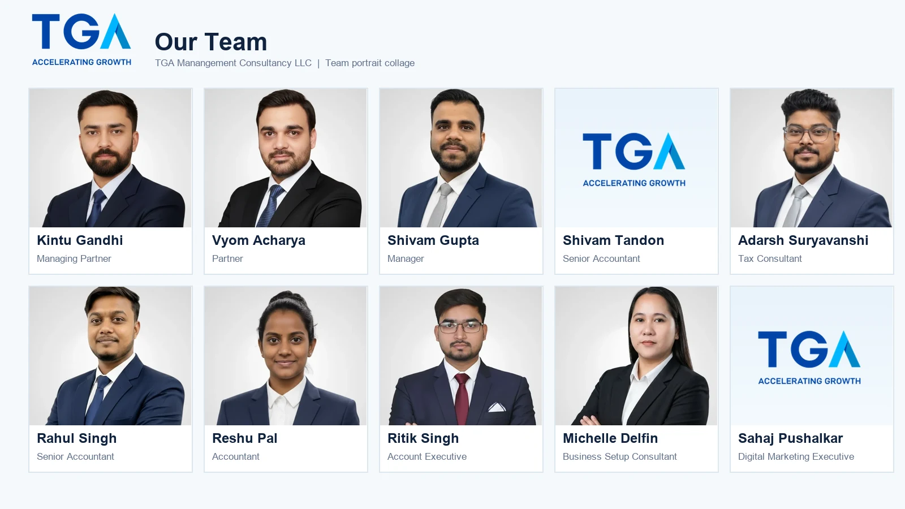
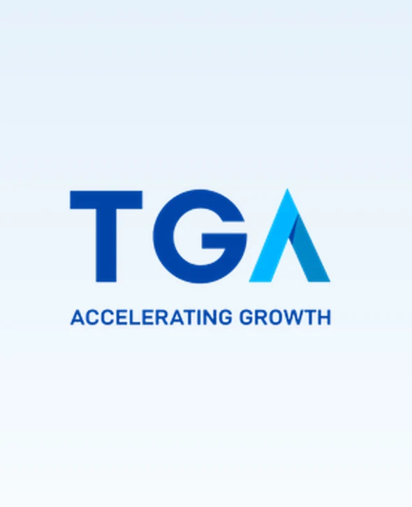

TGA Manangement Consultancy LLC
Media Kit
Official TGA logo files, team portraits and a ready-to-use media package.
Press and partners
TGA at a glance.
TGA Manangement Consultancy LLC is a Dubai-based consultancy supporting companies with business setup, accounting, tax and compliance matters across the UAE. Its approach combines professional advice with practical support shaped around each business need.
Explore the TGA brandComplete package
TGA Media Kit
Web-ready logos, eight available team portraits, the TGA profile graphic and a labelled team portrait collage.
Download ZIP Web-resolution WebP files. Contact TGA for print artwork or alternate formats.Team visual
Meet the people behind TGA.
This is a portrait collage assembled from individual team images; it is not a single group photograph. TGA logo graphics appear where portraits have not been supplied.

Download team collage
Logo files
Official TGA marks.
Use the files in their original proportions and colours. See the Brand page for colours and use guidance.


TGA mark
Download WebP ↗Team portraits
Individual team assets.
The available portraits are shown with current website names and titles. For Shivam Tandon and Sahaj Pushalkar, the TGA logo graphic is used in place of a supplied portrait.





Media enquiries
Need a different format?
For print-quality artwork, image permissions or a factual check before publication, contact TGA.